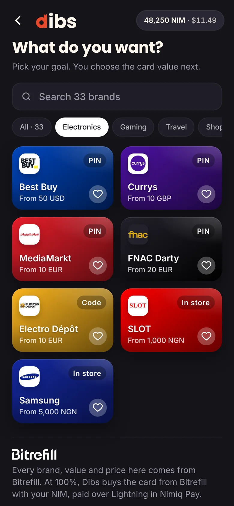
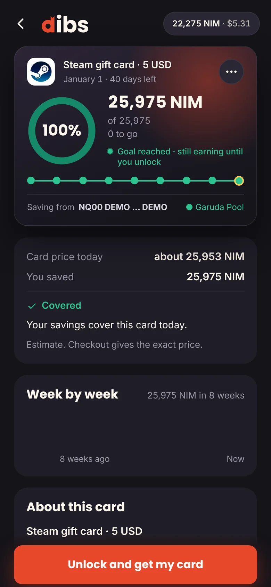
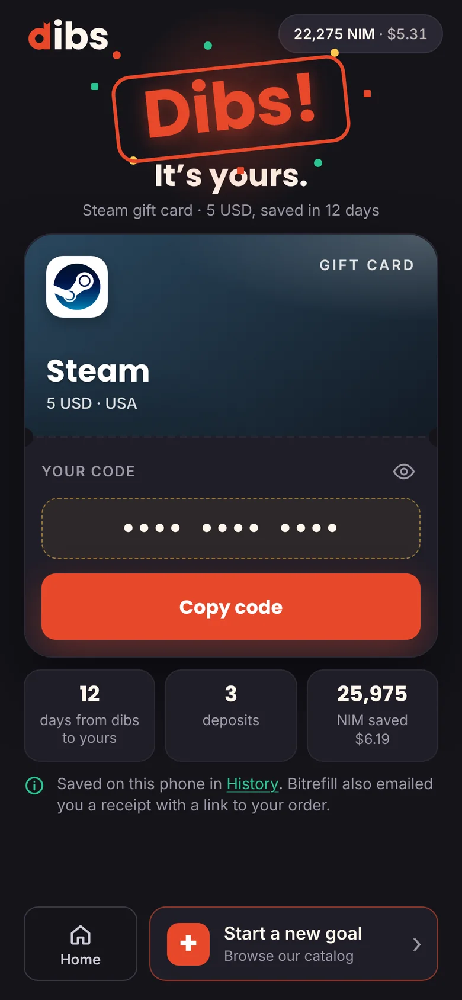

Todo empieza con «Quiero eso».
Dibs nació de un pequeño cambio de perspectiva: en vez de pedir a las personas que ahorren por ahorrar, empezar por algo que ya les importa.
Dibs nació como una Mini App de Nimiq Pay basada en un cambio de motivación. Su nombre viene de «call dibs»: ese momento en que señalas algo y dices «Voy a conseguirlo». En Dibs, esa decisión se convierte en una meta, un plan y un camino visible hasta alcanzarla.
Queremos que las criptomonedas sean útiles en la vida diaria. No solo un saldo abstracto, sino algo que puedas destinar a una tarjeta de regalo, una comida, un viaje o una experiencia. Dibs no emite tokens, no hace ventas de tokens ni te pide tus claves.
Resérvalo. Ahorra. Hazlo tuyo.
La idea detrás de Dibs
Un saldo no es una razón.
Las herramientas tradicionales de ahorro suelen empezar por una cifra. La motivación suele empezar por algo concreto.
El dinero queda reducido a un total abstracto. Es fácil posponer u olvidar el progreso.
Una recompensa real, un objetivo y pasos visibles dan sentido a cada depósito.
Al mismo tiempo, las criptomonedas pueden resultar difíciles para quien empieza: billeteras, staking, tipos de cambio y procesos de compra añaden fricción. Dibs reúne esas piezas en un recorrido fácil de entender, sin ocultar lo que pasa.
Empieza por lo que quieres comprar.
Dibs te permite elegir un producto real, fijar una meta de ahorro en NIM y avanzar a tu propio ritmo.
Algo real
Elige una tarjeta de regalo del catálogo y decide para qué estás ahorrando.
Progreso visible
Sigue la meta, añade NIM cuando quieras y observa cuánto has avanzado.
Siempre bajo tu control
El staking se aprueba desde tu billetera Nimiq Pay, bajo tu dirección.
Las categorías incluyen electrónica, videojuegos, streaming, viajes, compras y comida. Dibs no es una app solo para juegos: la idea es que ahorrar para cosas cotidianas resulte alcanzable, sea cual sea la categoría.
De «reservado» a «es tuyo».
Cuatro acciones y una espera obligatoria de la red. No se descuenta nada automáticamente de tu billetera.
Resérvalo.
Elige una tarjeta, un valor y una fecha objetivo. Dibs convierte el precio de pago de la tienda en una meta de NIM al tipo de cambio actual.

Añade NIM cuando puedas.
Aprueba cada depósito en Nimiq Pay. Los NIM se delegan para staking desde tu propia cuenta; Dibs no los custodia. Tú decides cuándo y cuánto añadir.

Llega al 100 % y desbloquea.
El anillo de progreso muestra claramente la meta. Cuando estés listo, desactiva el staking y espera el periodo de liberación de Nimiq, normalmente de 12 a 24 horas. Las recompensas son variables y no están garantizadas.

Paga la tarjeta.
Después del desbloqueo, Dibs prepara un pedido en Bitrefill. Confirmas el pago en Nimiq Pay mediante Lightning y el código de la tarjeta aparece en la app cuando el pedido termina.

Estas son capturas reales de la app. Los saldos, fechas y valores de las tarjetas mostrados como ejemplo no son cifras públicas ni pruebas de transacciones.
Cómo funciona por dentro, sin complicaciones.
Dibs es una capa de aplicación sobre infraestructura existente. No requiere un token de Dibs ni una nueva cadena de bloques.
El servidor de Dibs gestiona la información del catálogo y coordina pedidos; no custodia NIM ni claves privadas de los usuarios.
Cada pieza y su función
- activas ahora,
- El activo nativo usado para ahorrar y comprar en Dibs. Su precio de mercado puede cambiar.
- Nimiq Pay
- La billetera controlada por el usuario que muestra las aprobaciones de transacciones y permite pagos Lightning.
- Staking de Nimiq
- El proceso de red que permite participar con NIM en prueba de participación. Elige entre cinco pools de staking verificados en tu primer depósito, con Garuda Pool por defecto. Las recompensas no están garantizadas.
- Bitrefill
- La tienda independiente que proporciona inventario de tarjetas de regalo, facturas y códigos de canje.
Los desarrolladores pueden revisar el repositorio público de Dibs y sus notas de seguridad. El cliente y el pequeño servicio tienen distintas responsabilidades: la aprobación de operaciones permanece del lado del cliente y las credenciales del proveedor, en el servidor.
Una meta clara. Compromisos transparentes.
Dibs no cobra suscripción ni comisiones adicionales por comprar tarjetas de regalo. Eso no significa que toda la experiencia sea gratuita.
El precio de pago de Bitrefill puede superar el valor nominal de la tarjeta y puede cambiar.
Se calcula con el tipo de cambio actual y un margen para posibles variaciones. El importe final se confirma al pagar.
Las recompensas dependen del staking de Nimiq y del validador. Las comisiones del pool reducen el importe neto recibido.
Como NIM tiene un precio de mercado, una meta suficiente hoy podría no cubrir la misma compra mañana. Las recompensas no eliminan el riesgo de precio. Si no tienes suficientes NIM al pagar, quizá debas añadir más; los NIM sobrantes siguen siendo tuyos.
Sin rendimiento de ahorro garantizado. Dibs no es una cuenta bancaria ni un producto de inversión. El precio de las criptomonedas puede bajar, las recompensas de staking pueden variar, pueden existir comisiones de red y los fondos en staking no están disponibles de inmediato.
Tu meta. Tus claves.
Nuestro principio inicial es sencillo: Dibs no debería necesitar custodiar tus fondos para ayudarte a ahorrar.
- Mostrar tus metas y tu progreso
- Preparar operaciones para tu aprobación en Nimiq Pay
- Consultar precios y coordinar pedidos de tarjetas de regalo
- Gastar NIM sin la aprobación de tu billetera
- Acceder a la clave privada de tu billetera ni almacenarla
- Garantizar recompensas, tipos de cambio ni disponibilidad de productos
En la versión actual, los detalles de las metas se guardan en el dispositivo. Las estadísticas anónimas son opcionales: los usuarios eligen si las comparten y pueden desactivarlas o borrar lo compartido. El servicio comprueba las transacciones de depósito declaradas en la cadena antes de incluirlas en los totales públicos. El alojamiento web puede procesar datos técnicos habituales de las solicitudes.
La autocustodia también tiene riesgos. Debes proteger tus credenciales y verificar cuidadosamente importes y destinos en las ventanas de aprobación. Hay riesgos de validadores, red, software, proveedores, existencias y tipos de cambio. Dibs no controla la entrega de Bitrefill, sus condiciones ni las marcas de tarjetas compatibles.
Lee la explicación completa de seguridad, privacidad y las condiciones. Puedes comunicar problemas de seguridad mediante un aviso privado de seguridad de GitHub.
No es una presentación.
Es una app que funciona.
Dibs v1.7.7 es una Mini App de Nimiq Pay funcional. El recorrido hasta la tarjeta de regalo se ha probado con transacciones reales en la red principal.
La idea original de ahorro se convierte en una aplicación que las personas pueden probar.
Una tarjeta de regalo de Steam comprada con NIM mediante Nimiq Pay y Lightning.
Un desbloqueo real en la red principal tardó 12 h 4 min.
Recorrido completo desde la reserva hasta la tarjeta, disponible con NIM reales.
Publicamos el código de la app, un historial transparente de versiones y ejemplos de transacciones. No dependas de una promesa imposible de verificar cuando puedes comprobar el trabajo.
El producto crecerá.
El principio seguirá igual.
Ya disponibles: Amigos opcional, listas de deseos, mensajes y fondos de regalo, códigos privados dentro de la app y clasificaciones voluntarias. Los controles para compartir están desactivados por defecto. Los códigos enviados en Dibs están cifrados de extremo a extremo y el servidor no puede leerlos.
Las dos incorporaciones previstas abajo son orientativas. Los planes pueden cambiar; no prometemos fechas ni rendimientos.
Ahorra para una tarjeta de regalo real
Crea metas, aprueba depósitos de NIM en staking, elige un pool, sigue el progreso, desbloquea y completa compras. Amigos, listas de deseos, regalos privados y clasificaciones son opcionales.
Juntos, 2.000 metas alcanzadas
Una meta comunitaria que cuenta metas alcanzadas sin nombres ni clasificaciones.
Dibs 2.0
Previsto para después del concurso. Los planes pueden cambiar.
La disponibilidad y el orden de los lanzamientos pueden variar mientras probamos, aprendemos y escuchamos a la comunidad. Para conocer la versión más reciente, consulta Novedades, en lugar de tomar una hoja de ruta publicada como documentación actualizada.
Una meta pequeña puede cambiar cómo se siente ahorrar.
Creemos que ahorrar debería consistir menos en mirar una cifra y más en acercarte a algo importante para ti.
Dibs aún es joven. Seguiremos mejorándolo en público, documentando lo que funciona, explicando lo que no y diseñando para quien lo usa. No prometemos que cada meta sea fácil, sino que el camino hacia ella pueda ser más claro.
Dibs es independiente y no está patrocinado, asociado ni respaldado por Bitrefill ni por las marcas del catálogo. Los nombres y logotipos pertenecen a sus propietarios. Este documento es informativo y no constituye asesoramiento financiero, una oferta de inversión ni una promesa de rendimientos.
Fuentes y lecturas adicionales
Puedes comprobar el producto, las decisiones técnicas y la infraestructura subyacente en sus fuentes.
Litepaper versión 1.0 | Publicado el 19 de noviembre de 2026 | Los detalles del producto pueden cambiar. Última revisión: 22 de noviembre de 2026.